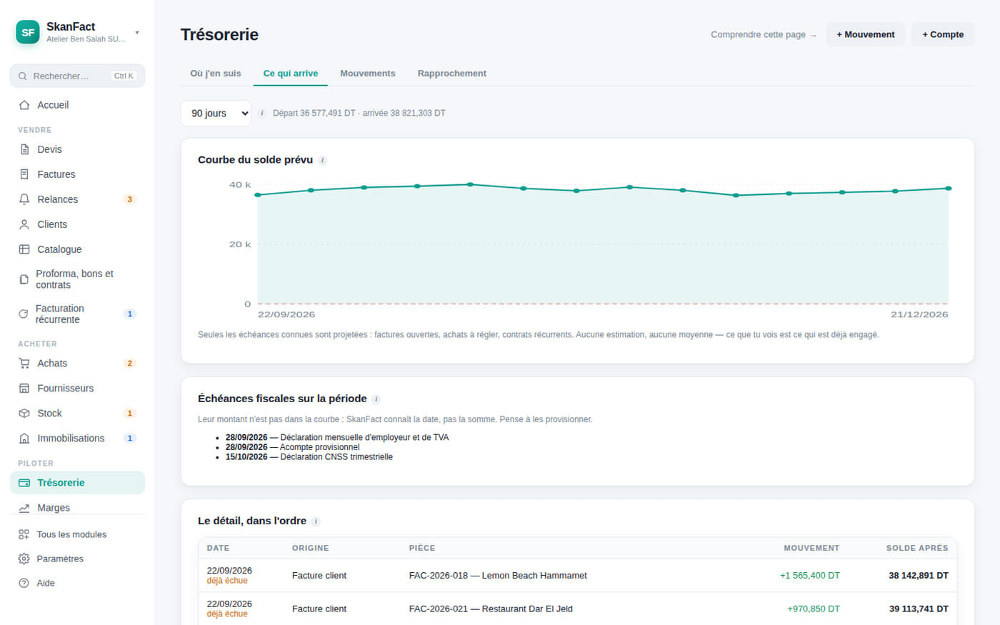
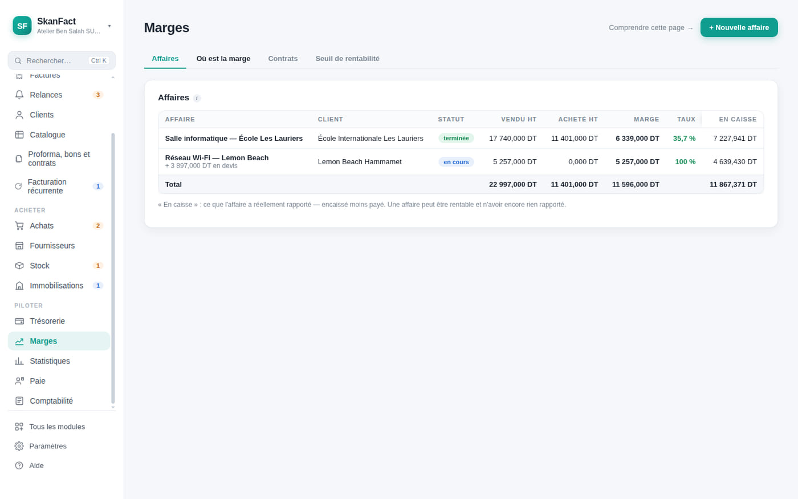
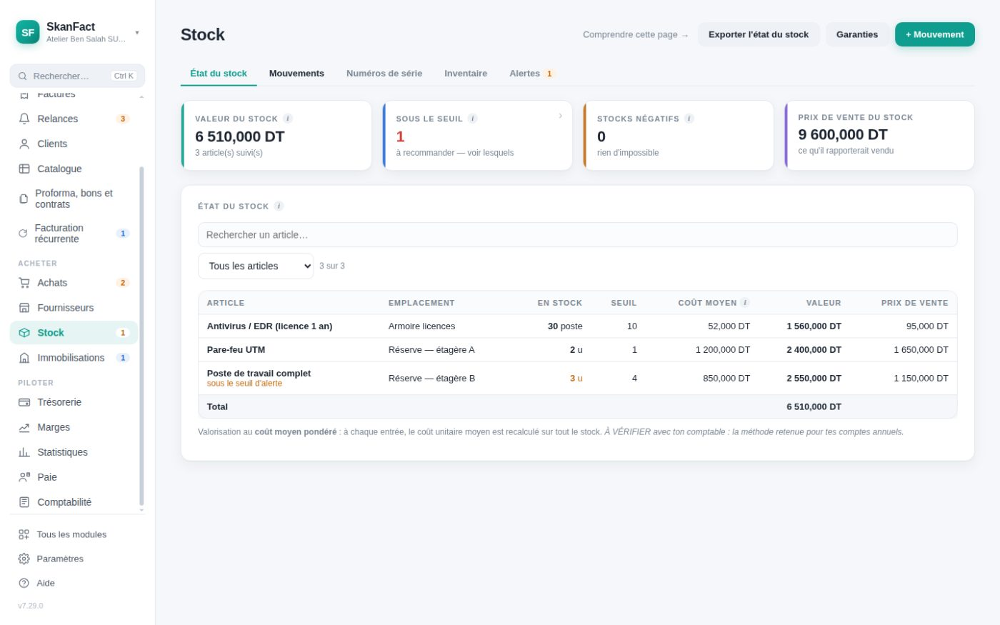
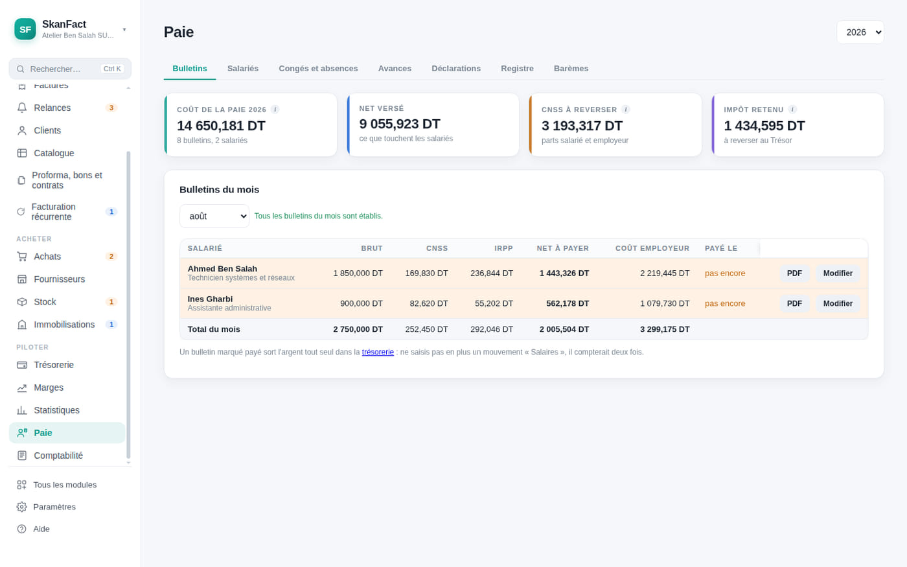

Accueil Achats, stock et trésorerie
Au-delà de la facture
Savez-vous si vous gagnez de l'argent ?
Facturer, c'est la moitié du travail. SkanFact suit aussi ce que vous achetez, ce qui dort sur l'étagère, ce que vous gardez vraiment sur chaque affaire, et le jour où votre compte passe sous zéro.
Dormir tranquille
Saurez-vous payer vos fournisseurs le 15 ?
La prévision ne compte que ce qui est vraiment engagé : les factures à encaisser, les règlements à sortir, les échéances déjà connues. Et elle vous dit le jour où le solde passe sous zéro.


La vraie question
Quelle affaire vous rapporte, et laquelle vous coûte.
Une marge estimée pendant que vous tapez le devis, à partir de vos coûts d'achat. Et une marge exacte sur chaque affaire terminée : les factures réelles contre les achats réellement rattachés.
Ce qui entre
Achats, fournisseurs et TVA déductible.
Chaque facture d'achat porte sa destination : charge, marchandise ou bien durable. C'est ce qui permet à l'application de ne pas raconter n'importe quoi sur votre résultat du mois.

Seize modules
Elle grandit avec votre entreprise.
Au départ, vous n'affichez que les devis et les factures : le menu reste court. Le jour où vous embauchez ou tenez du stock, vous allumez le module — il était déjà là, et rien de ce que vous avez saisi n'est perdu.

Vos salariés
Les bulletins, et tout ce qu'il y a autour.
Cotisations CNSS, barème IRPP progressif, congés, avances, documents du personnel et déclarations à déposer. Tous les taux sont des réglages, jamais des chiffres écrits dans le programme.
Voyez vos chiffres, pas seulement vos factures.
Trente jours d’essai, tous les modules ouverts, sans carte bancaire.
Mac et Windows · aucune carte bancaire · vos données restent chez vous